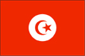
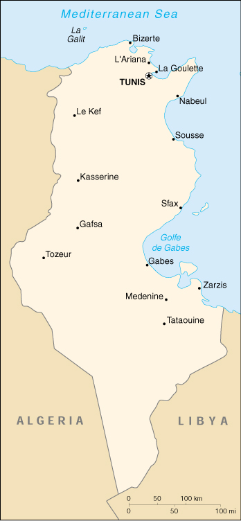

{kind=link}


| Tunisia |  |
|
|  | |
| Introduction |
Background: Following independence from France in 1956, President Habib BOURGIUBA established a strict one-party state. He dominated the country for 31 years, repressing Islamic fundamentalism and establishing rights for women unmatched by any other Arab nation. In recent years, Tunisia has taken a moderate, non-aligned stance in its foreign relations. Domestically, it has sought to diffuse rising pressure for a more open political society.
| Geography |
Location: Northern Africa, bordering the Mediterranean Sea, between Algeria and Libya
Geographic coordinates: 34 00 N, 9 00 E
Map references: Africa
Area:
total:
163,610 sq km
land:
155,360 sq km
water:
8,250 sq km
Area - comparative: slightly larger than Georgia
Land boundaries:
total:
1,424 km
border countries:
Algeria 965 km, Libya 459 km
Coastline: 1,148 km
Maritime claims:
contiguous zone:
24 nm
territorial sea:
12 nm
Climate: temperate in north with mild, rainy winters and hot, dry summers; desert in south
Terrain: mountains in north; hot, dry central plain; semiarid south merges into the Sahara
Elevation extremes:
lowest point:
Shatt al Gharsah -17 m
highest point:
Jabal ash Shanabi 1,544 m
Natural resources: petroleum, phosphates, iron ore, lead, zinc, salt, arable land
Land use:
arable land:
19%
permanent crops:
13%
permanent pastures:
20%
forests and woodland:
4%
other:
44% (1993 est.)
Irrigated land: 3,850 sq km (1993 est.)
Natural hazards: NA
Environment - current issues: toxic and hazardous waste disposal is ineffective and presents human health risks; water pollution from raw sewage; limited natural fresh water resources; deforestation; overgrazing; soil erosion; desertification
Environment - international agreements:
party to:
Biodiversity, Climate Change, Desertification, Endangered Species, Environmental Modification, Hazardous Wastes, Law of the Sea, Marine Dumping, Nuclear Test Ban, Ozone Layer Protection, Ship Pollution, Wetlands
signed, but not ratified:
Marine Life Conservation
Geography - note: strategic location in central Mediterranean
| People |
Population: 9,593,402 (July 2000 est.)
Age structure:
0-14 years:
30% (male 1,469,048; female 1,375,782)
15-64 years:
64% (male 3,080,631; female 3,089,244)
65 years and over:
6% (male 290,388; female 288,309) (2000 est.)
Population growth rate: 1.17% (2000 est.)
Birth rate: 17.38 births/1,000 population (2000 est.)
Death rate: 4.98 deaths/1,000 population (2000 est.)
Net migration rate: -0.7 migrant(s)/1,000 population (2000 est.)
Sex ratio:
at birth:
1.08 male(s)/female
under 15 years:
1.07 male(s)/female
15-64 years:
1 male(s)/female
65 years and over:
1.01 male(s)/female
total population:
1.02 male(s)/female (2000 est.)
Infant mortality rate: 30.09 deaths/1,000 live births (2000 est.)
Life expectancy at birth:
total population:
73.69 years
male:
72.14 years
female:
75.36 years (2000 est.)
Total fertility rate: 2.04 children born/woman (2000 est.)
Nationality:
noun:
Tunisian(s)
adjective:
Tunisian
Ethnic groups: Arab 98%, European 1%, Jewish and other 1%
Religions: Muslim 98%, Christian 1%, Jewish and other 1%
Languages: Arabic (official and one of the languages of commerce), French (commerce)
Literacy:
definition:
age 15 and over can read and write
total population:
66.7%
male:
78.6%
female:
54.6% (1995 est.)
| Government |
Country name:
conventional long form:
Republic of Tunisia
conventional short form:
Tunisia
local long form:
Al Jumhuriyah at Tunisiyah
local short form:
Tunis
Data code: TS
Government type: republic
Capital: Tunis
Administrative divisions: 23 governorates; Al Kaf, Al Mahdiyah, Al Munastir, Al Qasrayn, Al Qayrawan, Aryanah, Bajah, Banzart, Bin 'Arus, Jundubah, Madanin, Nabul, Qabis, Qafsah, Qibili, Safaqis, Sidi Bu Zayd, Silyanah, Susah, Tatawin, Tawzar, Tunis, Zaghwan
Independence: 20 March 1956 (from France)
National holiday: National Day, 20 March (1956)
Constitution: 1 June 1959; amended 12 July 1988
Legal system: based on French civil law system and Islamic law; some judicial review of legislative acts in the Supreme Court in joint session
Suffrage: 20 years of age; universal
Executive branch:
chief of state:
President Zine El Abidine BEN ALI (since 7 November 1987)
head of government:
Prime Minister Hamed KAROUI (since NA November 1999)
cabinet:
Council of Ministers appointed by the president
elections:
president elected by popular vote for a five-year term; election last held 24 October 1999 (next to be held NA 2004); prime minister appointed by the president
election results:
President Zine El Abidine BEN ALI reelected for a third term without opposition; percent of vote - Zine El Abidine BEN ALI nearly 100%
Legislative branch:
unicameral Chamber of Deputies or Majlis al-Nuwaab (163 seats; members elected by popular vote to serve five-year terms)
elections:
last held NA October 1999 (next to be held NA 2004)
election results:
percent of vote by party - NA; seats by party - NA; note - the government changed the electoral code to guarantee that the opposition won seats
Judicial branch: Court of Cassation (Cour de Cassation)
Political parties and leaders: Constitutional Democratic Rally Party or RCD [President BEN ALI (official ruling party)]; Movement of Democratic Socialists or MDS [leader NA]; five other political parties are legal, including the Communist Party
Political pressure groups and leaders: the Islamic fundamentalist party, Al Nahda (Renaissance), is outlawed
International organization participation: ABEDA, ACCT, AfDB, AFESD, AL, AMF, AMU, BSEC (observer), CCC, ECA, FAO, G-77, IAEA, IBRD, ICAO, ICC, ICFTU, ICRM, IDA, IDB, IFAD, IFC, IFRCS, IHO, ILO, IMF, IMO, Inmarsat, Intelsat, Interpol, IOC, IOM, ISO, ITU, MIPONUH, NAM, OAS (observer), OAU, OIC, OPCW, OSCE (partner), UN, UN Security Council (temporary), UNCTAD, UNESCO, UNHCR, UNIDO, UNMIBH, UNMIK, UPU, WFTU, WHO, WIPO, WMO, WToO, WTrO
Diplomatic representation in the US:
chief of mission:
Ambassador Noureddine MEJDOUB
chancery:
1515 Massachusetts Avenue NW, Washington, DC 20005
telephone:
[1] (202) 862-1850
Diplomatic representation from the US:
chief of mission:
Ambassador Robin L. RAPHEL
embassy:
144 Avenue de la Liberte, 1002 Tunis-Belvedere
mailing address:
use embassy street address
telephone:
[216] (1) 782-566
FAX:
[216] (1) 789-719
Flag description: red with a white disk in the center bearing a red crescent nearly encircling a red five-pointed star; the crescent and star are traditional symbols of Islam
| Economy |
Economy - overview: Tunisia has a diverse economy, with important agricultural, mining, energy, tourism, and manufacturing sectors. Governmental control of economic affairs while still heavy has gradually lessened over the past decade with increasing privatization, simplification of the tax structure, and a prudent approach to debt. Real growth averaged 5.0% in the 1990s, and inflation is slowing. Growth in tourism and increased trade have been key elements in this steady growth. Tunisia's association agreement with the European Union entered into force on 1 March 1998, the first such accord between the EU and Mediterranean countries to be activated. Under the agreement Tunisia will gradually remove barriers to trade with the EU over the next decade. Broader privatization, further liberalization of the investment code to increase foreign investment, and improvements in government efficiency are among the challenges for the future.
GDP: purchasing power parity - $52.6 billion (1999 est.)
GDP - real growth rate: 6% (1999 est.)
GDP - per capita: purchasing power parity - $5,500 (1999 est.)
GDP - composition by sector:
agriculture:
12%
industry:
28%
services:
60% (1998 est.)
Population below poverty line: 14.1% (1990 est.)
Household income or consumption by percentage share:
lowest 10%:
2.3%
highest 10%:
30.7% (1990)
Inflation rate (consumer prices): 2.7% (1999 est.)
Labor force:
3 million (1997 est.)
note:
shortage of skilled labor
Labor force - by occupation: services 55%, industry 23%, agriculture 22% (1995 est.)
Unemployment rate: 16.5% (1999 est.)
Budget:
revenues:
$5.1 billion
expenditures:
$5.8 billion, including capital expenditures to $1.6 billion (1999 est.)
Industries: petroleum, mining (particularly phosphate and iron ore), tourism, textiles, footwear, food, beverages
Industrial production growth rate: 8% (1998 est.)
Electricity - production: 7.94 billion kWh (1998)
Electricity - production by source:
fossil fuel:
99.5%
hydro:
0.5%
nuclear:
0%
other:
0% (1998)
Electricity - consumption: 7.549 billion kWh (1998)
Electricity - exports: 0 kWh (1998)
Electricity - imports: 165 million kWh (1998)
Agriculture - products: olives, grain, dairy products, tomatoes, citrus fruit, beef, sugar beets, dates, almonds
Exports: $5.8 billion (f.o.b., 1999 est.)
Exports - commodities: textiles, mechanical goods, phosphates and chemicals, agricultural products, hydrocarbons
Exports - partners: France 27%, Italy 22%, Germany 15%, Belgium 6%, Libya 4% (1998)
Imports: $8.3 billion (c.i.f., 1999 est.)
Imports - commodities: machinery and equipment, hydrocarbons, chemicals, fuel, food
Imports - partners: France 27%, Italy 20%, Germany 12%, Spain 4%, Belgium 4%, US 4% (1998)
Debt - external: $12.1 billion (1999 est.)
Economic aid - recipient: $933.2 million (1995); note - ODA, $90 million (1998 est.)
Currency: 1 Tunisian dinar (TD) = 1,000 millimes
Exchange rates: Tunisian dinars (TD) per US$1 - 1.2455 (January 2000), 1.2546 (December 1999), 1.1387 (1998), 1.1059 (1997), 0.9734 (1996), 0.9458 (1995)
Fiscal year: calendar year
| Communications |
Telephones - main lines in use: 628,000 (1997)
Telephones - mobile cellular: 50,000 (1998)
Telephone system:
above the African average and continuing to be upgraded; key centers are Sfax, Sousse, Bizerte, and Tunis; Internet access available
domestic:
trunk facilities consist of open-wire lines, coaxial cable, and microwave radio relay
international:
5 submarine cables; satellite earth stations - 1 Intelsat (Atlantic Ocean) and 1 Arabsat; coaxial cable and microwave radio relay to Algeria and Libya; participant in Medarabtel; two international gateway digital switches
Radio broadcast stations: AM 7, FM 20, shortwave 2 (1998)
Radios: 2.06 million (1997)
Television broadcast stations: 19 (plus some low power stations) (1997)
Televisions: 920,000 (1997)
Internet Service Providers (ISPs): 4 (1999)
| Transportation |
Railways:
total:
2,168 km
standard gauge:
471 km 1.435-m gauge
narrow gauge:
1,687 km 1.000-m gauge
dual gauge:
10 km 1.000-m and 1.435-m gauges (three rails)
Highways:
total:
23,100 km
paved:
18,226 km
unpaved:
4,874 km (1996 est.)
Pipelines: crude oil 797 km; petroleum products 86 km; natural gas 742 km
Ports and harbors: Bizerte, Gabes, La Goulette, Sfax, Sousse, Tunis, Zarzis
Merchant marine:
total:
16 ships (1,000 GRT or over) totaling 151,084 GRT/159,576 DWT
ships by type:
bulk 2, cargo 5, chemical tanker 3, liquified gas 1, petroleum tanker 1, short-sea passenger 3, specialized tanker 1 (1999 est.)
Airports: 32 (1999 est.)
Airports - with paved runways:
total:
15
over 3,047 m:
3
2,438 to 3,047 m:
6
1,524 to 2,437 m:
3
914 to 1,523 m:
3 (1999 est.)
Airports - with unpaved runways:
total:
17
1,524 to 2,437 m:
2
914 to 1,523 m:
8
under 914 m:
7 (1999 est.)
| Military |
Military branches: Army, Navy, Air Force, paramilitary forces, National Guard
Military manpower - military age: 20 years of age
Military manpower - availability:
males age 15-49:
2,669,934 (2000 est.)
Military manpower - fit for military service:
males age 15-49:
1,523,849 (2000 est.)
Military manpower - reaching military age annually:
males:
102,464 (2000 est.)
Military expenditures - dollar figure: $356 million (FY99)
Military expenditures - percent of GDP: 1.5% (FY99)
| Transnational Issues |
Disputes - international: maritime boundary dispute with Libya; Malta and Tunisia are discussing the commercial exploitation of the continental shelf between their countries, particularly for oil exploration